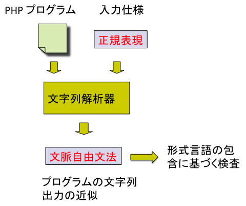
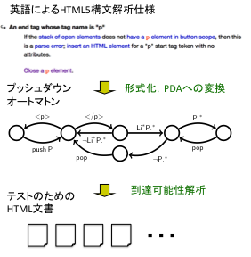

[
English
/Japanese]
ホーム
研究
論文
学会活動等
講義
研究室
研究テーマ：ソフトウェア検証，プログラミング言語，形式言語理論
現在の社会は，ソフトウェアへの依存度をますます高めており，その信頼性の向上が課題となっています．例えば，ウェブに関連したソフトウェアにおいては，プログラムの小さな誤りが，クロスサイトスクリプティングやSQLインジェクションなどの脆弱性の原因となり，情報漏洩などの深刻な問題を起こしています．本研究室では，ソフトウェアの信頼性を高めるための理論や技術を研究しています．特に，形式言語やオートマトンの理論に基づく検証技術の研究に注力しています．
研究プロジェクト
ウェブソフトウェアの検証
プログラムが出力しうる文字列の集合を文脈自由言語として近似するプログラム解析（文字列解析）を開発し，サーバサイドプログラムの検証に適用しています．以下のような応用があります．
SQLインジェクション脆弱性，クロスサイトスクリプティング（XSS）脆弱性の検出
生成されるWebページの妥当性（ウェブページが文法的に正しいか）の検査
形式言語理論に基づく検査を行うことで様々な検査が可能になっています． この解析をスクリプト言語PHPに対して実装し，ソースコード(
PHP String Analyzer
)を公開しています．

HTML5構文解析仕様からのテストの自動生成
HTML5の構文解析プログラムの信頼性の向上を目指した研究を行っています．以下の手法によりテストのためのHTML文書の自動生成を実現しています．
仕様記述のための言語を導入し，構文解析仕様を形式化
形式化した仕様を条件付きプッシュダウンシステムと呼ばれるプッシュダウンオートマトンの拡張へ変換
条件付きプッシュダウンシステムに対し到達可能性解析を適用することで，テストのためのHTML文書を自動生成
この手法により自動生成したHTML文書により，ウェブブラウザを検査し，Safari, Firefoxなどのブラウザの非互換性の発見に成功しています．

その他
Theorem Proving/Software Verification